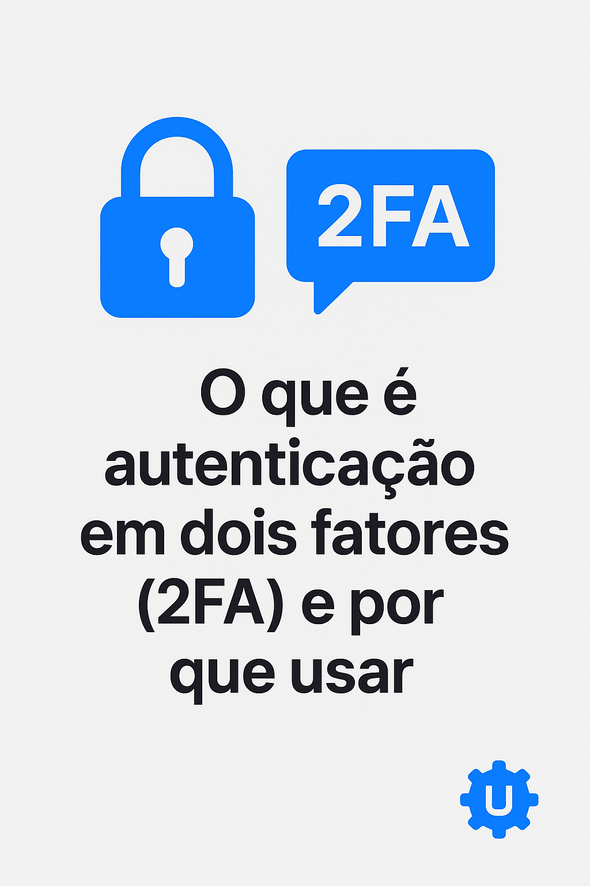

O que é Autenticação em Dois Fatores (2FA) e Por Que Usar
Você provavelmente já ouviu falar em autenticação em dois fatores, também conhecida como 2FA. Esse recurso se tornou uma das formas mais eficazes de proteger contas online contra acessos indevidos.
O que é 2FA?
A autenticação em dois fatores é um processo de segurança que exige duas etapas para confirmar sua identidade. Em vez de depender apenas da senha, o sistema pede uma segunda forma de verificação.
Principais Tipos de 2FA
- Códigos por SMS: enviados para o celular cadastrado.
- Aplicativos autenticadores: como Google Authenticator e Authy, que geram códigos temporários.
- Chaves físicas de segurança: dispositivos USB ou NFC para autenticação.
- Biometria: impressão digital, reconhecimento facial ou de voz.
Por que usar 2FA?
- Reduz drasticamente o risco de invasões.
- Protege mesmo em caso de vazamento de senha.
- Adiciona uma camada extra de confiança em serviços financeiros e de e-mail.
Conclusão
Contar apenas com senhas já não é suficiente para manter sua segurança digital. Ativar a autenticação em dois fatores é simples, rápido e pode evitar grandes problemas no futuro. Se ainda não usa, comece agora mesmo!